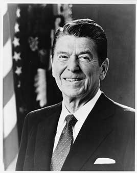

Cut income tax rates sharply, built up the military and pressed the Soviet Union in the last decade of the Cold War. The debt nearly tripled as defense spending and tax cuts outpaced revenue. The Iran-Contra affair, secret arms sales to Iran with profits sent to Nicaraguan rebels, was the major scandal of his second term.
Shaded areas show the years in office, with a few years before and after for comparison. Budget years run October to September, so a new president's first budget year starts the fall after they take office.
Sept 30, 1980 (end of fiscal 1980): $907.70 billion → Sept 30, 1988 (end of fiscal 1988): $2.60 trillion
Daily debt figures don't exist before 1993, so Reagan's numbers use the fiscal years closest to his term.
Debt as a share of GDP. Above 100% means the debt is bigger than a year of everything the country produces.
Money borrowed each budget year (below the line) or paid down (above).
Jan 1981: 7.5% → Jan 1989: 5.4%. Monthly rates; the chart shows yearly averages.
How much prices rose each year (consumer price index).
What everyday prices and paychecks did while in office.
Prices use the consumer price index (MeasuringWorth). The minimum wage is the federal rate set by Congress.
381 orders, numbered 12287–12667.
Source: National Archives: Reagan executive orders (full list of every order).
Immediately removed the remaining federal price and allocation controls on crude oil and gasoline.
Federal RegisterRequired major regulations to pass a cost-benefit test reviewed by the White House budget office.
Federal RegisterSet the rules for the CIA, NSA and other spy agencies. Still in force, as amended.
Federal RegisterExpanded what could be classified and ended automatic declassification.
Federal RegisterRequired drug testing for federal employees in sensitive jobs.
Federal RegisterRequired agencies to limit rules that override state authority.
Federal RegisterA pardon wipes out the punishment for a federal crime; a commutation shortens a sentence but leaves the conviction. Counts are by federal fiscal year. Reagan issued no pardons in the Iran-Contra affair; his successor pardoned six people involved.
Source: U.S. Dept. of Justice, clemency statistics, which lists every recipient with the crime and sentence.
The crime: Conspiracy to violate civil rights by authorizing illegal FBI break-ins at homes of relatives and friends of Weather Underground members (convicted 1980)
Sentence: Fines of $5,000 and $3,500
Why it drew attention: Senior FBI officials. Felt was revealed in 2005 as 'Deep Throat', the Watergate source.
SourceThe crime: Illegal contributions to Nixon's 1972 campaign and obstruction of justice (pleaded guilty 1974)
Sentence: $15,000 fine
Why it drew attention: Owner of the New York Yankees; pardoned on Reagan's last full day.
SourceThe crime: Operating an illegal moonshine still (1956)
Sentence: Two years (11 months served)
Why it drew attention: NASCAR legend.
SourceThe same checklist for every president. Tap a row for details and sources.
Impeachment was discussed during Iran-Contra but no articles were voted on.
Independent counsel Lawrence Walsh found no credible evidence that Reagan broke a criminal law, but concluded he 'created the conditions which made possible the crimes committed by others'.
SourceIran-Contra: 14 people charged and 11 convicted, though the convictions of Oliver North and John Poindexter were overturned on appeal. Defense Secretary Caspar Weinberger was indicted and pardoned before trial. Separate scandals at HUD, the EPA and the Wedtech defense contractor led to further convictions of officials.
Lawrence Walsh (Iran-Contra), James McKay (Attorney General Edwin Meese and Wedtech), Arlin Adams (HUD) and Whitney North Seymour (Michael Deaver), among others.
SourceNo official finding that the president used these agencies against opponents. National Security Council staff did hide Iran-Contra from Congress and shred documents while Attorney General Meese was conducting an inquiry.
What happened, what was proven, and how it ended.
Officials secretly sold weapons to Iran, which was under an arms embargo, hoping to free hostages, and diverted the profits to Contra rebels in Nicaragua despite a law barring such aid.
Outcome: Reagan admitted trading arms for hostages; 11 officials convicted (two overturned); six pardoned by his successor.
SourceHousing Department officials steered federal subsidies to developers who hired well-connected Republicans as consultants.
Outcome: An independent counsel won 16 convictions.
SourceOfficials were accused of mismanaging the toxic-waste cleanup fund and favoring polluters.
Outcome: EPA head Anne Gorsuch Burford was held in contempt of Congress and resigned; an assistant administrator was convicted of perjury.
SourceA Bronx defense contractor won no-bid contracts through bribery and political connections.
Outcome: About 20 convictions, including two congressmen; Attorney General Meese was investigated and resigned.
SourceHe fired more than 11,000 striking air traffic controllers, whose strike was illegal under federal law, and banned them from rehiring.
Outcome: Admired as decisive by supporters; blamed by unions for weakening organized labor.
SourceHe did not speak publicly at length about AIDS until 1987, by which time more than 20,000 Americans had died.
Outcome: Critics say the delay cost lives; defenders point to rising research funding.
SourceWidely quoted remarks, with the context they were said in.
Government is not the solution to our problem; government is the problem.
A few months ago I told the American people I did not trade arms for hostages. My heart and my best intentions still tell me that's true, but the facts and the evidence tell me it is not.
Mr. Gorbachev, tear down this wall!